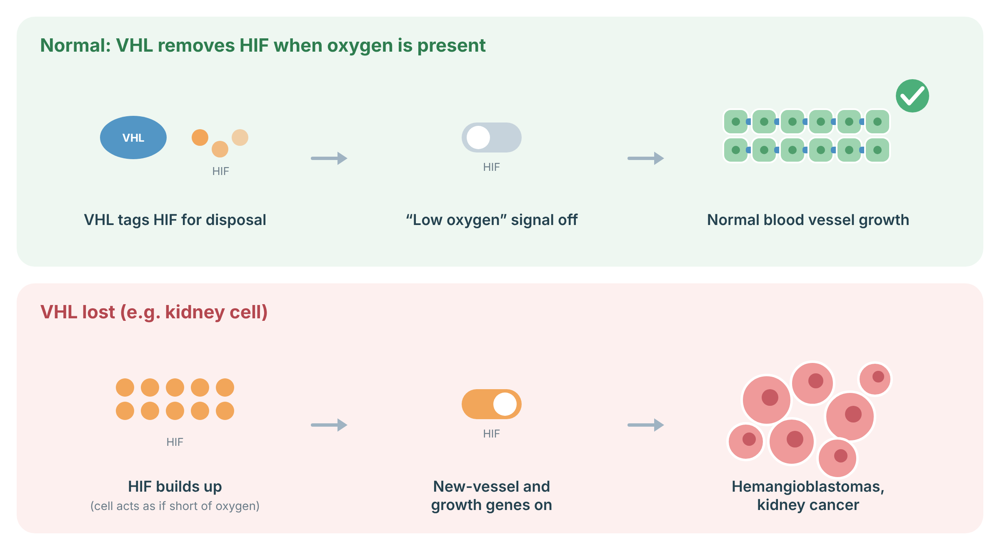

Understanding VHL
VHL is an inherited condition that causes tumours and cysts in several organs, mainly the brain and spinal cord, the eyes, the kidneys, the adrenal glands and the pancreas. Most tumours are benign, but kidney cancer can occur. Children and teenagers can develop VHL tumours too, so surveillance starts in early childhood.
Cells have an oxygen sensor. When oxygen is normal, the VHL protein tags a “low-oxygen” signal called HIF so it is destroyed. When VHL is missing, HIF builds up and the cell behaves as if it were short of oxygen: it switches on genes that grow new blood vessels and drive cell growth. This is why VHL tumours are often full of blood vessels.
VHL: Tumours usually arise when a cell loses its second working VHL copy.

Sources: Kaelin WG Jr. Nat Rev Cancer 2002;2:673–82 (PubMed).
Associated tumours
VHL tumours can occur in many organs, often more than one over a lifetime.
| Tumour | Comment |
|---|---|
| Hemangioblastoma of the brain, spinal cord and retina | Benign, blood-vessel-rich; can affect vision or nerve function |
| Clear cell renal cell carcinoma and kidney cysts | Main cancer risk |
| Pheochromocytoma / paraganglioma | Can cause high blood pressure; important before surgery or pregnancy |
| Pancreatic neuroendocrine tumours and cysts | Cysts are usually harmless |
| Endolymphatic sac tumour (inner ear) | Can cause hearing loss, tinnitus, imbalance |
| Epididymal / broad-ligament cystadenomas | Benign |
Surveillance
Surveillance with regular eye exams, blood tests and MRI finds tumours while they are small. The schedule below is the VHL Alliance active-surveillance schedule (revised 2020), consistent with the 2023 international consensus.
| Check (tumours screened) | Starting age | How often |
|---|---|---|
| History and physical exam; blood pressure and pulse | From age 1 (exam) / age 2 (blood pressure) | Yearly |
| Dilated eye exam (retinal hemangioblastoma) | Before age 1 | Every 6–12 months to age 30, then yearly |
| Plasma free (or urine) metanephrines (pheochromocytoma/paraganglioma) | Age 5 | Yearly |
| MRI brain and whole spine with/without contrast (CNS hemangioblastoma) | Age 11 | Every 2 years |
| Hearing test (endolymphatic sac tumour) | Age 11 | Every 2 years |
| MRI abdomen with/without contrast (kidney cancer, pheochromocytoma, pancreatic tumours/cysts) | Age 15 | Every 2 years |
| High-resolution MRI of the internal auditory canals | Age 15–20 | Once |
Management
Many VHL tumours are watched until they reach a size or cause symptoms where treatment helps more than it harms.
Genetic counselling
Each child of a person with VHL has a 1 in 2 chance of inheriting it. Testing at-risk relatives early lets carriers start surveillance and lets non-carriers stop it (VHL Alliance).
References
- van Leeuwaarde RS, et al. Von Hippel-Lindau Syndrome. In: GeneReviews. Seattle (WA): University of Washington. Bookshelf NBK1463; PubMed.
- Daniels AB, et al. Guidelines for surveillance of patients with von Hippel-Lindau disease: consensus statement of the International VHL Surveillance Guidelines Consortium and VHL Alliance. Cancer 2023;129:2927–40 (PubMed).
- VHL Alliance. Suggested Active Surveillance Guidelines (revised 2020) (PDF).
- Rednam SP, et al. Von Hippel-Lindau and hereditary pheochromocytoma/paraganglioma syndromes: clinical features, genetics, and surveillance recommendations in childhood. Clin Cancer Res 2017;23:e68–e75 (PubMed).
- Jonasch E, et al. Belzutifan for renal cell carcinoma in von Hippel-Lindau disease. N Engl J Med 2021;385:2036–46 (PubMed).
- Kaelin WG Jr. Molecular basis of the VHL hereditary cancer syndrome. Nat Rev Cancer 2002;2:673–82 (PubMed).